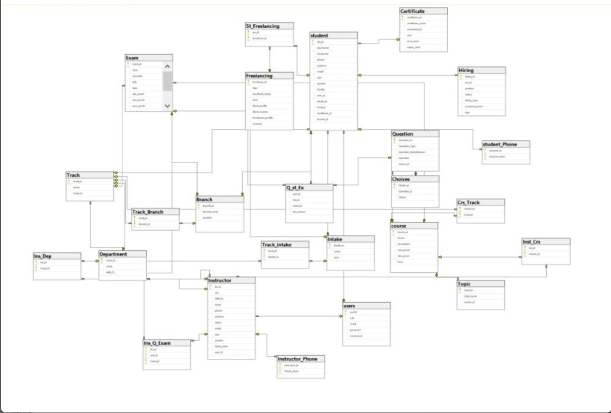
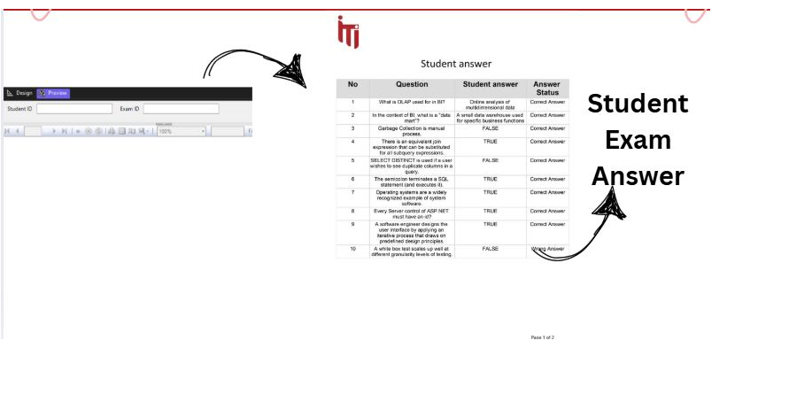
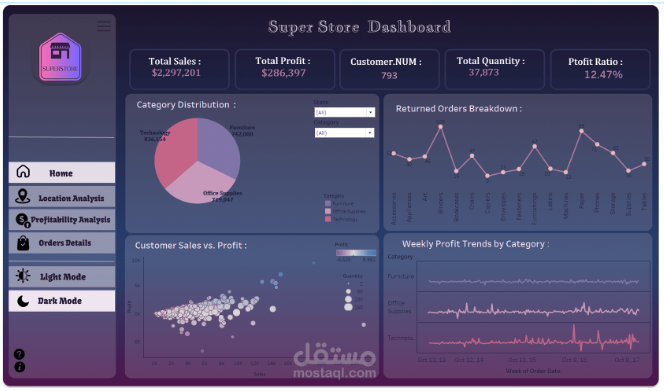
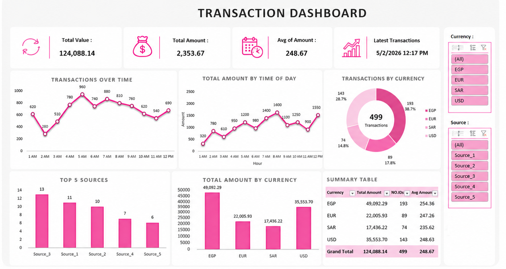
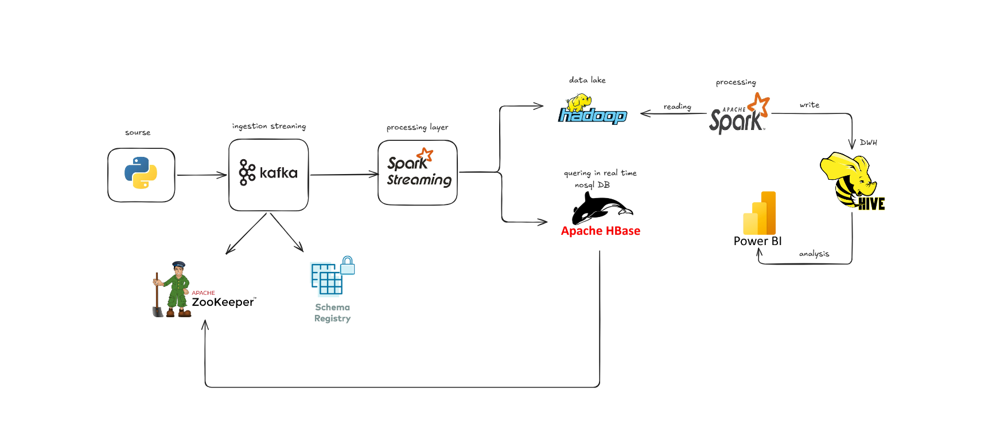
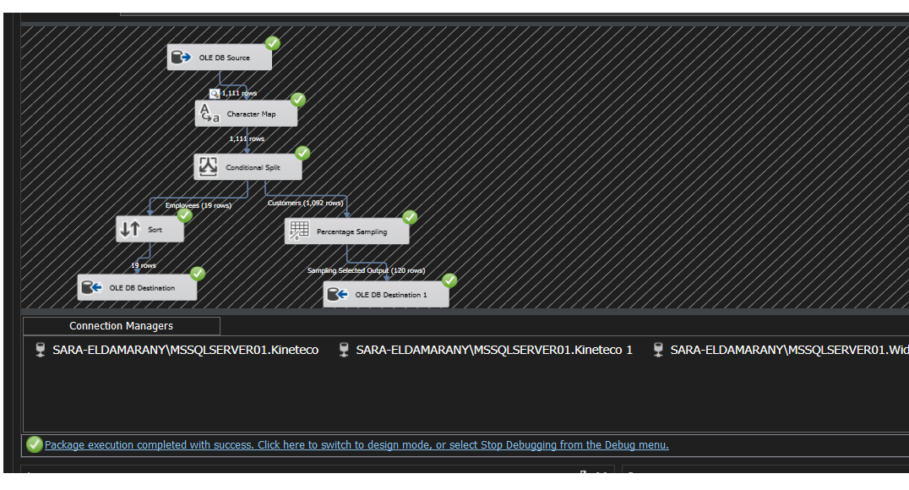
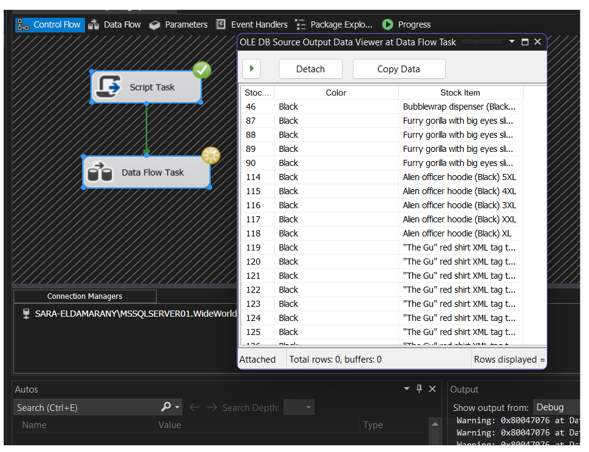
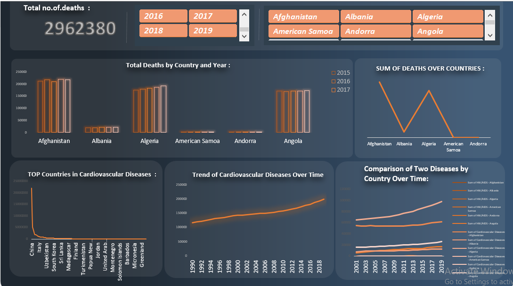
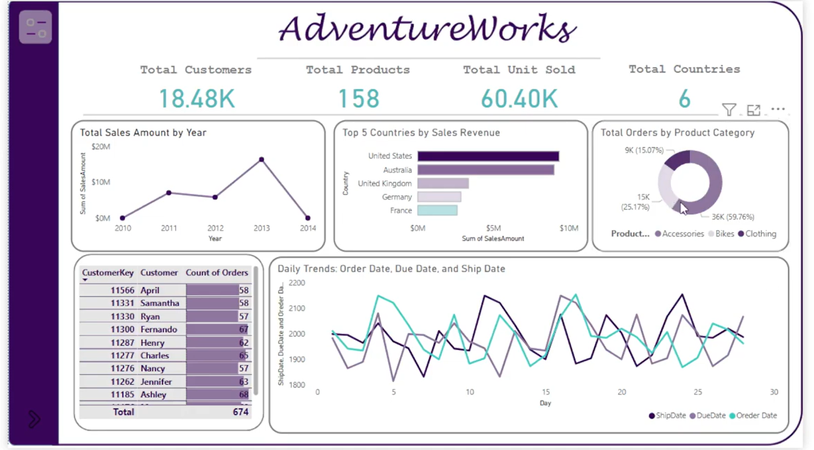

Transforming complex data into meaningful insights and building AI-driven solutions for tomorrow.
Advanced
Expert
Data Analysis
Engineering
From Raw Data to AI-Driven Solutions
A detail-oriented and results-driven Data Analyst with a strong background in data analysis and AI engineering. A fresh graduate in Computer Science from Luxor University (GPA: 3.07), currently undergoing intensive training in Data Engineering and AI at Digilians Initiative. I'm adept at leveraging analytical tools such as Python, SQL, and Power BI to transform complex data into meaningful insights that drive informed decision-making.
I don't just analyze data - I build end-to-end AI solutions. From designing efficient ETL pipelines to creating intelligent data-driven applications, I bring comprehensive expertise in modern data engineering and artificial intelligence.
Building AI-driven insights and intelligent data pipelines
Expert in Power BI, Tableau, and Python visualization libraries
Strong foundation in SQL, data modeling, and warehousing
Building scalable data pipelines and transformation processes
Pandas, NumPy, Matplotlib, Seaborn for data manipulation
Analyzing challenges and implementing data-driven solutions
A roadmap of growth and achievements
Military Academy - Hybrid | Internship
Currently undergoing intensive technical training in the Data Engineering track, focusing on building scalable data solutions and AI integration.
Led data analysis projects, built interactive dashboards, automated reporting
Advanced Power BI, DAX, Data Warehousing, SQL for BI
Data analysis using Excel, Python, and Power BI
120-hour intensive training in Pandas, NumPy, Matplotlib
Grade: Very Good | GPA: 3.07
ICPC Luxor Community HR Specialist | GDSC Technical Support
Technical expertise combined with analytical abilities
Skilled in analyzing complex challenges and implementing solutions
Excellent interpersonal abilities, conveying complex information clearly
Performance analysis and reporting for data-driven decisions
C, C#, C++ foundational programming skills
Always expanding expertise in data analytics and AI
Featured work and achievements


Designed and implemented a comprehensive relational database for ITI's examination system. Developed SQL-based data models with full normalization, optimized indexing, stored procedures, and an interactive student exam answer interface.

Developed an interactive dashboard for sales, profit, and customer analysis with data-driven recommendations. Features KPI cards, category distribution, returned orders tracking, and customer sales vs. profit scatter plot.


Built a real-time data streaming pipeline using Apache Kafka for message brokering, Spark Structured Streaming for processing, and HDFS for distributed storage. Features topic-based ingestion, windowed aggregations, and fault-tolerant data persistence.


Designed an ETL pipeline using SSIS for data integration and transformation. Features OLE DB source extraction, Character Map transformation, Conditional Split routing, Sort, Percentage Sampling, and multiple destination loading with successful execution.

Analyzed wildfire and health data using Python and Power BI, creating interactive dashboards with bar charts, line charts, and trend analysis. Features total deaths tracking by country and year, cardiovascular disease trends, and disease comparison over time.

Built an interactive Power BI dashboard for sales and customer trend analysis with KPI cards, sales trends by year, top countries by revenue, product category distribution, daily order trends, and customer order tracking table.
Bachelor of Computer Science
2020 - 2024 | GPA: 3.07AI & Data Engineering Track
Jan 2026 - PresentPower BI Developer Professional Track
Nov 2024 - Feb 2025Python for Data Analysis
Aug - Oct 2024 | 120 HoursProfessional development and achievements
Ministry of Communications & Information Technology
Preparing Data for Analysis with Excel
Querying Databases with SQL
SSIS, Data Analytics
Database Fundamentals
SQL Certification
Professional Certificate for Data Analysis
Python, SQL, Data Preprocessing
Online Learning Certifications
Python for Data Analysis
Ready to start? Let's discuss your project!
Whether you need interactive dashboards, data analysis, ETL pipelines, or AI-driven solutions, I bring the expertise and enthusiasm to deliver results.